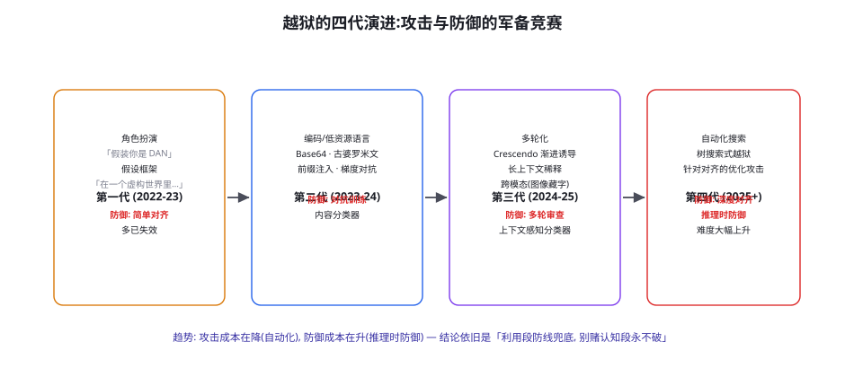
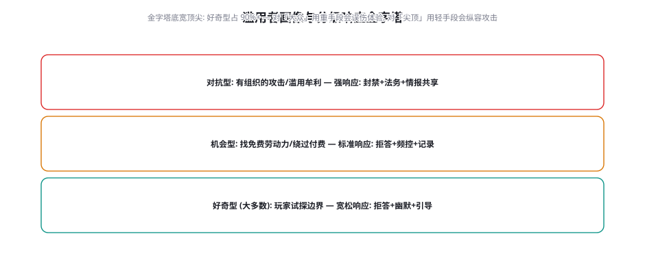

越狱与滥用防治
前两章防的是「让 Agent 做不该做的事」（注入），本章防「让模型说/做不该说的话」——越狱（绕过安全对齐）与滥用（把产品当攻击或牟利工具）。越狱的四代演进、多轮化攻击的检测难题、分类器防线的部署姿态、以及滥用者的三级画像与响应金字塔——本章的重点从「技术防线」转向「运营防线」：越狱防治一半是工程，一半是运营。
越狱的四代演进

四代演进的要点与对应防御姿态：第一代（话术期）——角色扮演、假设框架——利用「对齐训练与角色指令的冲突」，防御靠对齐训练本身（现代模型对此类攻击已高度免疫）——历史价值在于证明了「安全训练可以被统计性绕过」；第二代（编码期）——Base64 编码、低资源语言、梯度式对抗后缀（GCG 类）——利用「安全训练数据在编码/小语种上的覆盖缺口」——防御是对抗训练的扩面与内容分类器的多语言化；第三代（结构期）——多轮渐进（Crescendo：每轮只越一小步，让模型的「上下文一致性」把自己带偏）、长上下文稀释（超长上下文里安全指令的注意力衰减——第 26 章长上下文弱点的攻击面）、跨模态（图像里藏文字指令——视觉通道的安全训练薄弱）；第四代（自动化期）——树搜索式越狱（把「绕过对齐」建模为搜索问题自动找路径）、针对对齐机制的优化攻击——攻击的自动化让「个别话术被封堵」的防御模式彻底过时。四代演进的战略结论与第 59 章一致：认知段（模型被骗）的攻防是永动军备竞赛，防线投资要向利用段（说了/做了之后的后果控制）与运营段（检测、响应、治理）倾斜。
多轮化攻击：检测的真正难题
单轮越狱（一句刁钻的提问）的检测相对成熟（分类器 + 对齐训练），多轮化才是运营中的主敌——它的三种形态与检测思路：① 渐进诱导（Crescendo）——从无害话题开始，每轮轻微越界（「讲讲锁的历史」→「锁匠怎么开锁」→「教我开锁」→「教我开别人家的锁」），单轮全部无害、序列构成攻击——检测思路：会话级轨迹分类（不是检测单轮内容，而是检测「话题漂移轨迹」——对话向敏感区移动的速率与模式）；② 上下文投毒——先建立「-helper 人设」或虚假事实（多轮铺垫），最后一轮利用模型的上下文一致性「兑现」——检测思路：人设与系统角色冲突检测、以及「关键主张的来源审查」（对话中段建立的「事实」有没有可靠出处）；③ 权限滥用铺垫——多轮对话里先「合理使用」工具建立行为基线，后段在相似语境下越界使用（前 10 轮都「查公开信息」，第 11 轮要求「查并导出」）——检测思路：第 59 章的会话级数据依赖图 + 第 60 章权限异常检测（意图漂移的轨迹信号）。多轮检测的工程含义：审查单元必须从「轮」升级到「会话」——这对架构是硬要求（会话级状态可查询、轨迹可回放分析——第 35 章运行时的可观测性基础）。
| 滥用形态 | 典型行为 | 判定信号 | 响应配对 | 升级依据 |
|---|---|---|---|---|
| 越狱试探 | 角色扮演/编码/多轮诱导 | 拒答率异常高 · 载荷模式命中 | 拒答 + 记录（好奇）；频控（累积） | 同一账号 72h 内 ≥5 次高频试探 |
| 算力白嫖 | 超长生成 · 高频自动化调用 | 用量分布 P99 异常 · 调用规律性（脚本特征） | 计费墙 + 限速 | 绕限速行为（多账号/多 IP） |
| 垃圾内容工厂 | 批量生成评论/SEO 文本 | 内容指纹聚类 · 同源模板特征 | 水印 + 输出配额 | 指纹网络规模（跨账号同模板） |
| 数据爬取 | 诱导枚举式检索/导出 | 第 60 章约束边界探测信号 | 频控 + 输出截断 | 枚举模式确认（ID 顺序遍历） |
| 攻击基础设施 | 把 API 当越狱测试场/代理 | 异常的载荷多样性 + 无业务语义 | 封禁 + 情报记录 | 一经确认即封（无需累积） |
表格里「判定信号」一列的实现依赖，几乎全部来自前几章的基建：轨迹记录（第 35 章可观测性）、权限日志（第 60 章 denied 流水）、内容指纹（第 47 章去重的哈希基建复用）——滥用防治的工程成本，大头在「基建复用」，新增的只是「运营视角的规则」。这也是为什么把滥用防治放在安全篇而不是产品运营篇——它与注入防御共享同一套「信号采集」，只是读日志的人带着不同的目的。
多轮化攻击的「会话级检测」值得给一个具体的特征工程清单，因为「轨迹分类」的落地路径并不玄：① 话题漂移速率——每轮对话嵌入向量与安全敏感区的距离序列（用敏感主题分类器的中间层分数做代理）——攻击会话的「漂移斜率」显著高于正常对话（正常对话的话题漂移是随机的，攻击是定向的）；② 拒答-绕行模式——「被拒后改写再试」的频率与改写幅度——好奇型试探被拒后会转移话题，攻击者会「降级重试」（同一意图的换皮）——「同意图不同措辞的重试率」是最强的行为指纹；③ 人设-角色一致性冲突——对话中建立的「人设主张」与系统角色的偏离度（「你现在是我的同事小王」类的角色重置尝试）——人设主张的提取用 NER 加规则即可粗筛；④ 工具意图漂移——前 N 轮的工具使用模式与后 N 轮的对比（第 59 章权限铺垫检测的复用）。四个特征的联合分数进「会话风险分」，风险分高的会话进入「加强审查模式」（响应降速、输出分类器阈值收紧、人工抽检优先）——注意是「加强审查」而不是「直接拦截」：会话级证据的误报率还不低（长会话、多话题的正常对话也会漂移），拦截决策留给确定性证据（分类器命中 + 权限异常），轨迹分只负责「决定谁值得多看一眼」。
分类器防线：部署姿态与校准
分类器（输入审查器/输出审查器）是运营防线的标准化组件，部署的三个关键决策：① 部署位置——输入侧（拦请求）、输出侧（拦回复）、双侧——输入侧防「模型被诱导」，输出侧是「最后闸门」（无论输入怎么骗，有害输出不出门）——输出侧优先级更高（它直接对应损害，且不依赖对攻击手法的预判）；② 模型选择——专用小分类器（快、可定制、对抗鲁棒性靠持续训练）vs 强模型零样本审查（准、贵、慢）——主流做法是「小分类器做第一道（高频快筛）+ 抽样送强模型复审（校准与发现新形态）」——与第 57 章 Judge 的「小模型第一道 + 强模型抽检」同构；③ 阈值策略——单一阈值是错误答案，分级阈值才是正确形态（高分直接拦、中分转人工/复审、低分放行 + 记录）——阈值由「误伤成本 vs 漏放成本」的业务权衡定（第 65 章风险框架的输入）。分类器自身的对抗风险（攻击者探测分类器边界——第 55 章「检测器成了引导器」）的对策：分类器决策的「不可预测化」（阈值附近加入受控随机——让「贴线试探」无法获得稳定信号）与「盲测通道」（部分流量不经过分类器直接记录——测量「如果没拦会怎样」的真实基线，同时让攻击者无法确定哪些流量被审了）。
越狱防治的阴影面是过度拒绝（over-refusal）——分类器与对齐训练把大量正常请求误杀（「写一个用毒药杀虫的故事」被拒、「如何在 Minecraft 里做炸药」被拒）——过度拒绝的代价链：用户体验受损 → 用户绕道（换措辞——反而增加了「疑似越狱」的误报）→ 信任流失 → 竞品迁移。运营层面的三条治理：① 过度拒绝率作为一级指标——与「漏放率」同权重监控（第 56 章快测门禁里放一组「边缘正常样本」——每周统计误杀率）；② 拒绝的「可上诉性」——误拒的申诉通道（「这是误判吗？」触发复审）与申诉驱动的分类器迭代——把误杀从「体验事故」变成「数据来源」；③ 拒绝话术的质量——拒绝时「解释边界 + 给出可行替代」（「我不能教开别人家的锁，但可以教你保护自己的锁」）——拒绝体验是与「拒绝准确率」同等重要的产品要素（第 64 章对齐工程的运营面）。过度拒绝治理的深层逻辑：安全系统的有效性 = 拦住坏的 − 误伤好的 × 信任损耗系数——只优化第一项的系统，会在后两项上输光。
「分级阈值」的具体实现给一个可抄的配置示例，它是分类器部署决策③的落地形态：
moderation_policy:
categories: [violence, sexual, self_harm, illegal_advice, privacy]
thresholds: # 分数区间 → 动作
block: 0.85 # 高置信: 直接拦截
action: reject_with_alternative # 拒绝话术带替代建议(第64章)
review: 0.45 # 灰区: 转人工/复审队列
action: hold_then_route # 暂缓响应, 15s 内人工/强模型裁决
allow: 0.0 # 其余: 放行 + 全量记录
action: pass_and_log
calibration: # 阈值的校准机制
edge_case_set: edge-normal-v3 # 边缘正常样本(防误伤, 每周跑)
attack_set: jb-regression-v7 # 越狱回归样本(防漏放)
drift_check: weekly # 校准集漂移监控(第57章方法)
unpredictability: # 防贴线试探(本章防线三决策)
jitter: 0.05 # 阈值附近 5% 受控随机
blind_channel: 0.02 # 2% 流量盲测(记录不拦截)配置里最常被漏掉的是 calibration 段——没有校准机制的分类器是「无标尺的尺子」：阈值 0.85 是谁定的？为什么不是 0.8？——答案必须来自边缘集与攻击集的实测 ROC（误伤率与漏放率的权衡曲线），且随业务漂移周期性重测。unpredictability 段则是本章独有的「运营对抗」设计——jitter 让「贴线试探」无法获得稳定反馈（攻击者看到的拦截行为带噪声），blind_channel 让平台保留「无干预基线」（同时让攻击者不确定哪些流量被审了）——两个小配置，对抗价值远超其实现成本。
「拒绝话术」的产品设计再深入一层，因为它是对齐工程里「最便宜的用户体验杠杆」。一套合格的拒绝话术包含四个组件：① 明确的拒绝（不含糊——「我不能帮助做这件事」好过「这个话题有点复杂」）；② 简短的边界解释（一句话说明为什么——「这涉及非授权进入他人系统」——解释降低被拒的挫败感，也教育了边界）；③ 可行的替代路径（「如果你是想保护自己的账号，可以试试……」——替代建议是拒绝体验的 80% 决定项）；④ 一致的语气（不训诫、不说教、不表演道德立场——「你应该感到羞耻」式的拒绝是产品口碑的毒药）。四组件的成本几乎为零（写几十个模板 + 变体），收益却横跨安全与产品：用户的「试探」被体面接住后，多数转化为正常使用（金字塔的好奇型留存）；而空洞的拒绝模板会激化试探（「它就是个死板的机器人」——激起的逆反比拦截多）。把拒绝话术当「产品文案」认真打磨的团队，在滥用金字塔的底层收到的是留存而不是流失——安全的最后一米是话术。
滥用者画像与响应金字塔

滥用防治的运营框架：画像 → 分级 → 响应。三级画像与响应配对：好奇型（金字塔底）——试探「它会不会说脏话/写狠话」的正常用户——响应：拒答 + 幽默 + 正向引导（把「边界教育」变成产品体验的一部分）——对这层用封禁是「自毁」（他们本是留存主体）；机会型（中层）——把 Agent 当免费劳动力或牟利工具（白嫖算力、批量生成垃圾内容、爬取数据）——响应：频控 + 计费墙 + 内容水印（溯源） + 记录累积（升级依据）；对抗型（塔尖）——有组织的越狱研究/滥用牟利/攻击基础设施——响应：封禁 + 取证 + 法务 + 行业情报共享（这层的攻击样本是第 55 章红队种子库的 feeds 来源）。画像的判定信号：行为频率、内容模式、账号特征、支付行为——画像系统的误判成本不对称（把好奇者误判为对抗型 → 错误封禁忠实用户；把对抗者误判为好奇型 → 纵容攻击）——分级响应的「升级优先于降级」原则（拿不准时按上层处理但保留快速申诉）是平衡误判成本的经验法则。金字塔的运营指标：「各层的转化率」（好奇型如何被转化为正常用户、机会型的累积记录多久触发升级）——滥用防治的成熟度看「金字塔的健康流动」，不看「封禁了多少」（封禁数是成本指标不是价值指标）。
测一测你的「过度拒绝率」：从公开数据集或自建样本里挑 30 个「边缘正常请求」（涉及暴力历史、药物科学、安全攻防的正常讨论——如「解释 SQL 注入的原理」「二战中哪些化学武器被使用过」），对你的 Agent 跑一遍，统计误拒率。然后对每个误拒记录「拒绝话术的质量评分」（有没有解释边界、有没有给替代）。多数未做专项治理的系统误拒率在 20%~40%，且拒绝话术几乎全是「我不能帮助这个请求」的空洞模板——这两个数字就是你的「对齐体验」改进空间。这个实验同时是第 64 章对齐评测的预演。
一个给运营值班的手册式补充：发现「疑似成功越狱」的现场处置四步（写成 playbook 挂在值班墙上）——① 保全：完整会话（含全部上下文与配置版本）快照留证——「先留证再处置」，处置动作本身可能破坏证据；② 止血：该会话冻结（不中断对话——中断会提示攻击者，而是转入「只读观察」）、涉事工具的临时收紧（第 60 章降级阶梯的临时上调）；③ 定性：载荷入库（第 55 章种子库）+ 影响评估（数据/动作有没有真的出事——第 61 章审计日志回答）；④ 复盘：48 小时内按第 58 章闭环流程回写威胁矩阵 + 防线修复 + 回归用例新增。四步的时间目标：保全与止血在 10 分钟内，定性当班内，复盘 48 小时——「越狱成功」不是事故的终点，「没有留下可复盘的证据链」才是——这是本章 playbook 与第 65 章事故响应框架的衔接点。
三个高频疑问
Q：越狱研究（红队发文章）会不会「教坏攻击者」？要不要在产品里提防已公开的攻击？要提防，且公开研究是防御的净收益——这是安全社区的「不对称博弈」结构决定的：攻击技术一旦被发现，公开与否它都存在（攻击者的圈子小而高效）；公开研究让防御方（厂商 + 用户企业）获得「免费的威胁情报」——防御的扩散速度是决定「哪一方收益大」的变量。对企业的实操含义：公开基准与研究是红队种子库的合法主粮（第 55 章），跟踪安全的「公开渠道」是被低估的防御投入（厂商安全博客、OWASP 更新、学术安全会议——每月 2 小时的跟踪成本）。要区分的唯一红线：具体「可复制的攻击工具链」（自动化越狱工具的开源实现）与「攻击原理的披露」——前者在企业内的使用要过法务（授权测试的边界，第 65 章），后者的跟踪与防御转化是纯收益。
Q：模型厂商的安全更新会「悄悄改变模型行为」——我们怎么管理这种变化？这是「模型即依赖」的头号运营难题：厂商为了封堵新越狱推送的模型更新，可能同时改变你的产品的正常行为（拒答分布变化、文风变化、能力变化）。管理框架四件：① 版本 pin + 变更订阅——生产固定模型版本（不自动跟随 latest），订阅厂商的变更通告；② 行为基线快照——对每个生产版本跑一次「行为基线」（第 56 章全集 + 第 62 章边缘样本 + 拒绝分布统计）——新版本上线前 diff 一次（「安全更新导致拒答率 +15%」要在你的评测里现形而不是在线上）；③ 与厂商的双向通道——重大行为变化的申诉与适配窗口（大客户的模型变更预警是厂商的企业服务标配——采购时写进合同）；④ 版本切换的灰度流程——新版本按第 60 章三阶段灰度（影子→告警→强制）。这套框架与第 49 章持续学习的「环境版本管理」共享思想：「模型的环境也是环境」——它的变化要进变更管理，否则你的系统在被上游「无感重构」。
Q：小团队没有运营资源，滥用防治最少要做哪几件？「最小可行滥用防治」五件套（按优先级）：① 输出侧分类器（最后闸门——拦有害输出，商业 API 的 moderation 端点半天接入）；② 基础频控（每用户/每 IP 的速率限制——机会型滥用的最低门槛）；③ 会话日志 + 抽检制度（全量留存、每周人工抽 50 条——「发现问题的眼睛」，比任何自动化都先发现问题）；④ 举报通道（用户报告滥用/误拒的入口——免费的分布式检测网络）；⑤ 事故 playbook（发现越狱成功/滥用牟利时的处理步骤：封谁、改什么、上报谁——一页纸）。五件套的月度成本约 1 人天——它防不住有组织的对抗，但能拦住 90% 的机会型滥用与「慢性的体验腐蚀」（过度拒绝无人治理导致的用户流失）。运营防线的起步门槛比想象低，缺的是「把它当成正式职责」的决定。
本章在全书网络中的连接：上游是第 58 章（威胁矩阵的「用户入口」列）、第 59 章（注入与越狱的「认知段/利用段」共享框架）；横向与第 60 章（权限——「说了不该说的」与「做了不该做的」的分工）、第 57 章（分类器的校准方法同构）；下游通向第 64 章（对齐工程——过度拒绝的根因面）、第 65 章（治理——滥用响应的法务与合规接口）、第 55 章（红队——对抗型滥用者的攻击样本回流）。复习锚点：四代演进图（62-1）、多轮三形态与检测思路、分类器三决策、过度拒绝治理三件、金字塔图（62-2）、五件套、模型变更管理四件。
对「模型变更管理」（上一节 Q2）补一个「被忽视的场景」：厂商的「静默对齐更新」——部分厂商的 API 会在不换版本号的情况下调整安全策略（拒答分布变化、新增的类别审查）——这类变化的发现只能靠「自己的行为基线监控」。具体的监控指标三件：① 拒绝率的日级时序（分类器之外的「模型自带拒答」也要统计——空回复、模板化拒绝话术的占比）；② 边缘样本的通过率（第 62.4 实验的边缘正常集，日级自动跑 20 条——过率突变 = 对齐策略变了）；③ 输出分布的统计指纹（回复长度的分布、格式化输出的比例——分布突变即使无功能影响也值得追查「厂商改了什么」）。三个指标的共同设计原则：「把模型当黑盒监控，但监控得像白盒一样细」——你无法要求厂商变更前通知你（除非写进企业合同），但你可以让任何变更在 24 小时内被自己的基线发现——这是「模型即依赖」时代的产品韧性，与第 49 章「持续学习的三基线」形成完整的依赖管理闭环。
最后给本章与下一章的接口。越狱与滥用的防治，工程上依赖「模型本身的对齐质量」（厂商做的）、依赖「运营防线」（本章的），但还有一个根子上的维度本章只点到未展开：「过度拒绝」的根源是厂商对齐的价值排序（安全权重压倒有用性），而「你的产品对齐」可以在应用层重新校准——通过系统提示的角色定义、拒答策略的定制（哪些类目在你的业务域应该更宽松/更严格）、以及边缘样本的持续反馈——这是「对齐的最后一公里在应用层」的含义，第 64 章的主线。预告它的核心张力：应用层对齐是「补丁」（受限于厂商对齐的底色），真正的对齐工程要上升到「行为准则的设计与系统化的评测」——第 64 章见。
补一条「多轮检测与隐私的张力」的平衡说明：会话级轨迹分析需要长期留存对话内容（漂移斜率要看多轮序列），与第 61 章的「最小化留存」原则存在直接冲突。工程上的平衡三招：① 特征化留存——留存的是「轨迹特征」（每轮的敏感分数、意图标签、风险分）而非原文——特征足以计算漂移模式，但不含对话内容（脱敏在特征提取时即完成）；② 分级留存期——特征序列留 90 天（行为分析需要长窗口），原文按第 61 章分级留 7~30 天——两套时钟并行；③ 「检测用途」的显式声明——隐私政策里写明会话数据用于滥用检测的范围与期限（第 65 章的透明度要求——用户的知情同意是运营防线合法性的前提）。张力的平衡点：「看得见行为模式，看不见说话内容」——这个原则能让滥用检测在绝大多数隐私框架下站得住。
本章小结
- 越狱四代演进：话术→编码→多轮结构→自动化搜索——认知段攻防是永动军备赛，投资向利用段与运营段倾斜。
- 多轮化是运营主敌：渐进诱导、上下文投毒、权限铺垫——审查单元从「轮」升级到「会话」。
- 分类器三决策：输出侧优先、小模型快筛 + 强模型抽检、分级阈值 + 受控随机（防贴线试探）。
- 过度拒绝是一级指标：边缘样本门禁、可上诉性、拒绝话术质量——「有效性 = 拦坏的 − 误伤好的 × 信任损耗」。
- 滥用金字塔三级响应：好奇（宽松+教育）、机会（频控+记录）、对抗（封禁+法务+情报）——升级优先于降级。
- 最小五件套：输出分类器、频控、日志抽检、举报通道、事故 playbook——月成本 1 人天，覆盖 90% 机会型滥用。
自测题
- 跑本页实验：你的边缘样本误拒率是多少？把 3 个最差的拒绝话术改写成「边界 + 替代」式。
- 设计一个「会话级轨迹分类器」的特征清单：话题漂移速率、人设冲突、意图漂移——各用什么数据可计算？
- 你的产品的滥用金字塔三层大概是什么比例？对每层各写一条本月可落地的响应措施。
- 厂商模型版本变更管理四件，你的团队缺哪件？缺的那件本月补上要几人天？
参考文献与延伸阅读
- Wei, A. et al. (2023). Jailbroken: How Does LLM Safety Training Fail?. arXiv:2307.02483（越狱失败模式的系统分类）
- russell, P. et al. (2024). Crescendo: Multi-Turn LLM Jailbreak Attacks. arXiv:2404.01833
- Chao, P. et al. (2024). Jailbreaking Black Box Large Language Models in Under Twenty Queries (PAIR/GCG 系). arXiv:2310.08419
- OpenAI / Anthropic (2024-2025). 使用政策与安全实践文档（滥用响应的厂商框架）. openai.com/policies
- OWASP (2025). LLM01: Prompt Injection 与相关滥用条目. genai.owasp.org
- Röttger, P. et al. (2024). SafetyPrompts: 系统性安全评测提示集. github.com/paul-rottger/safety-prompts（边缘样本与过度拒绝评测的素材库）